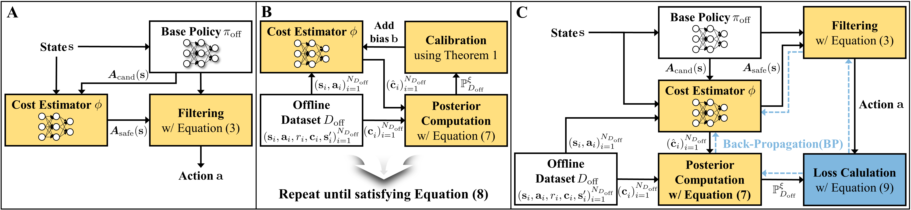

This paper proposes a method to provide probabilistic safety guarantees for offline reinforcement learning (RL) by limiting the probability of safety violation to a user-specified constraint threshold, i.e., a chance constraint. The proposed approach constructs a safety-filtered policy that accepts or rejects candidate actions based on a learned cost estimator. To ensure the resulting decisions satisfy the target safety constraint, we further calibrate the estimator via posterior computation using the offline dataset. The proposed method offers significant flexibility, allowing for dynamic adjustment of constraint thresholds during deployment without additional retraining. We empirically validate the proposed method on offline RL robot navigation tasks in the OSRL benchmark, demonstrating that it meets user-specified thresholds while achieving additional performance gains via end-to-end backpropagation.
